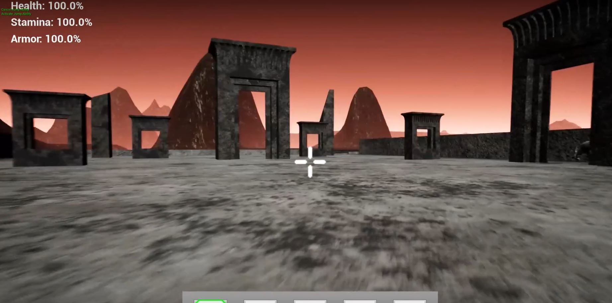

Void N'Null - Zoneout Studios
Void N'Null has been a project that my team began working on Fall 2021. We've had 4 Programmers, 4 Artists, and 3 who were working on both ends. Our proudest achievement about this game so far is that every asset and piece of code was created from within our team and we plan on adding much more by the end of spring. We currently have a deadline set for April 2022 to have this game prepared to showcase as our final year project and by then we are hoping to add all of the features we've had planned at the beginning of this project.
You can find more information about this game by clicking here!(This will redirect you to a new page)